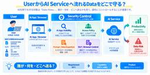
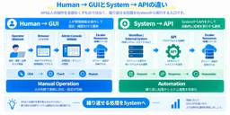
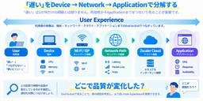
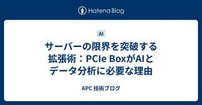
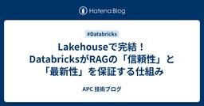
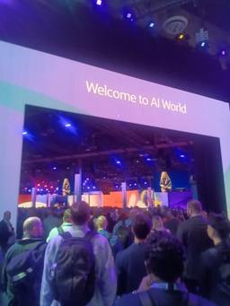
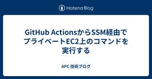
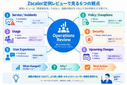
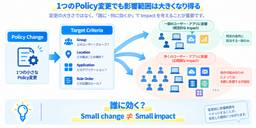

APC 技術ブログ
https://techblog.ap-com.co.jp/
株式会社エーピーコミュニケーションズの技術ブログです。
フィード

【AWS】AWS Certified Generative AI Developer - Professional (AIP-C01) に合格したので所感を綴る
APC 技術ブログ
目次 目次 はじめに 関連記事 試験について 点数 勉強期間 教材 試験の感想 お知らせ はじめに こんにちは、クラウド事業部の坂口です。 先日、AWS Certified Generative AI Developer - Professional (AIP-C01) を受験して、ありがたいことに無事合格をいたしました。 いつもの通り、万全とは限りなく程遠い状態で臨むこととなりましたが、合格したので結果オーライ。受けてみた感想などをつらつらと書いていこうと思います。 関連記事 ※ほぼ同じタイミングで再認定のために受験したDOPの記事 ※本記事ではこちらの記事の内容がそこそこ出てきます tec…
5時間前

【AWS】AWS Certified DevOps Engineer - Professional (DOP-C02) を再認定 (更新) したので所感を綴る
APC 技術ブログ
目次 目次 はじめに 関連記事 試験について 点数 勉強期間 教材 試験の感想 お知らせ はじめに こんにちは、クラウド事業部の坂口です。 先日、AWS Certified DevOps Engineer - Professional (DOP-C02) を再認定のために受験し、無事合格してきました。 いつの間にか有効期限の3年が迫っており、失効した場合の影響が大きすぎるため重い頭と腰を上げました。 ついでに、社内的な都合ではありますが、10月中に受験しておきたかったという都合もあります。 今回は再認定のための受験ということもあり、受けてみた感想などをそれとなく書いていこうと思います。 関連記…
6時間前

Chapter 8｜第90回 これからのZscalerエンジニアに求められるものは何か？
APC 技術ブログ
こんにちは、エーピーコミュニケーションズ 0-WANの山根です。 90回の連載をここまで読み進めると、Zscalerには多くの製品名や機能があることが分かります。 では、Zscaler Engineerに必要なのは、それらの設定項目をすべて暗記することでしょうか。 もちろん製品知識は必要です。 しかし、実務では「この画面で何を設定するか」より先に、 なぜこの通信になるのか。なぜこのControlが必要なのか。どこに原因候補があるのか。 を考える場面が数多くあります。 最終回では、90本で学んだ内容を「これから伸ばしていく力」として整理します。 まず結論。「製品を知る力」より一段上に「Archi…
6時間前

Chapter 8｜第89回 Zscalerの製品が増えても迷わないための整理方法
APC 技術ブログ
こんにちは、エーピーコミュニケーションズ 0-WANの山根です。 Zscalerを学び始めたときは、ZIAとZPAを覚えれば全体像が見えやすかったかもしれません。 ところが現在は、ZDX、Zero Trust Branch、Zero Trust Browser、Zero Trust Cloud、Data Security、AI Securityなど、扱う領域が広がっています。 製品名を一つずつ暗記しようとすると、 「これはZIAなのか、別製品なのか」 「この機能は誰を守るのか」 「新しい名前が出るたびに全体像が分からなくなる」 という状態になりやすくなります。 そこで最終回の一つ前では、製品名…
6時間前

Chapter 8｜第88回 Zscalerで「ユーザー」以外を守る世界とは？
APC 技術ブログ
こんにちは、エーピーコミュニケーションズ 0-WANの山根です。 ここまでの連載では、多くの場面で「UserがApplicationへAccessする」流れを中心に見てきました。 しかし企業の通信は、人が操作するPCからだけ発生するわけではありません。 Cloud上のWeb Serverが外部APIへ接続する。 Application Server同士が通信する。 AWSとAzureのWorkloadがDataをやり取りする。 Data CenterのSystemがCloud Serviceへ接続する。 こうしたServerやWorkload同士のCommunicationにもZero Tru…
6時間前

Chapter 8｜第87回 AI時代に情報漏えい対策はどう変わる？
APC 技術ブログ
こんにちは、エーピーコミュニケーションズ 0-WANの山根です。 生成AIを業務で使う場面が一気に増えました。 文章の要約、議事録作成、Code生成、調査、資料作成。 便利な一方で、利用者がPromptへ入力した情報は、従来のFile Uploadとは違う形で外部Serviceへ送られることがあります。 たとえば、顧客名、契約内容、Source Code、個人情報を何気なくPromptへ貼り付けるケースです。 「危険だからAIを全部禁止する」という方法もありますが、それでは生産性向上の機会まで失います。 そこで重要になるのが、AI利用を見える化し、使い方をControlし、機密Dataだけを守…
6時間前

Chapter 8｜第86回 TerraformとInfrastructure as CodeはZscalerとどう関係する？
APC 技術ブログ
こんにちは、エーピーコミュニケーションズ 0-WANの山根です。 第85回では、APIを使うと人の操作をSystemから実行できるようになる、という話をしました。 では、さらに一歩進んで、 「現在の設定状態そのものをCodeとして管理できないか？」 と考えると、Infrastructure as Code（IaC）の考え方につながります。 NetworkやCloud Infrastructureでは、ServerやNetwork ResourceをCodeで定義し、Reviewしてから反映する運用が広く使われています。 Zscalerでも、PolicyやApplication Segmentな…
6時間前

Chapter 8｜第85回 APIを使うとZscaler運用はどう変わる？
APC 技術ブログ
こんにちは、エーピーコミュニケーションズ 0-WANの山根です。 Zscalerの運用では、管理画面を使って確認・変更する場面が多くあります。 UserやApplicationの情報を確認する。 設定内容を一覧化する。 同じようなResourceを複数作る。 別Systemの情報と突き合わせる。 件数が少なければ、人が画面を見ながら作業する方法でも十分です。 しかし対象が増え、同じ処理を繰り返し、他Systemとの連携が必要になると、「人が毎回同じ操作をする」こと自体が運用負荷になります。 そこで使われるのがAPIです。 まず結論。APIは「管理画面の代わり」ではなくSystem同士をつなぐ入…
6時間前
Chapter 8｜第84回 Private Service Edgeはどんなときに考える？
APC 技術ブログ
こんにちは、エーピーコミュニケーションズ 0-WANの山根です。 Zscalerというと、「世界中に分散したZscaler Cloudへ通信を送る」イメージを持つ方が多いと思います。 実際、Public Service EdgeはZscalerの主要な提供形態です。 では、なぜPrivate Service Edgeという選択肢があるのでしょうか。 「Private」という名前から、Zscaler Cloudとは切り離された独立装置を想像するかもしれません。 しかし、そうではありません。 Private Service Edgeは、特定組織向けのService Edgeを自社SiteやClou…
6時間前

Chapter 8｜第83回 Zero Trust Browserって何？ブラウザーから始めるZero Trust
APC 技術ブログ
こんにちは、エーピーコミュニケーションズ 0-WANの山根です。 会社支給PCなら、MDMやEDR、Client Connectorなどで端末全体を管理できます。 では、委託先や外部PartnerのPC、BYODのように、企業側が端末全体を管理できない場合はどうでしょうか。 「業務Applicationを使ってほしい。でも個人端末へ会社のAgentを入れることは難しい」 こうした場面では、端末全体ではなくBrowserを仕事のSecurity境界として使う考え方が有効です。 Zscalerでは、その選択肢をZero Trust Browserとして提供しています。 まず結論。Browserの中…
6時間前

Chapter 8｜第82回 Zero Trust Branchって何？拠点ネットワークはどう変わる？
APC 技術ブログ
こんにちは、エーピーコミュニケーションズ 0-WANの山根です。 本社、支店、店舗、工場などの拠点Networkでは、これまで多くの役割を現地のNetwork機器で担ってきました。 Internet接続、拠点間通信、Firewall、VPN、Routing、Segmentation。 拠点が増えるほど、「つなぐためのNetwork」と「守るためのSecurity」の両方が複雑になりやすくなります。 ではZero Trustの考え方を拠点へ広げると、何が変わるのでしょうか。 Zscalerでは、その方向性をZero Trust Branchとして提供しています。 まず結論。Zero Trust …
6時間前

Chapter 8｜第81回 ZDXって何？「遅い」をユーザー体験から見る
APC 技術ブログ
こんにちは、エーピーコミュニケーションズ 0-WANの山根です。 「サーバーは正常です」 「回線にも障害はありません」 「でも、利用者は遅いと言っています」 こんな場面では、どこを見ればよいのでしょうか。 従来の監視では、サーバー、回線、Network機器などを個別に見て「正常か異常か」を確認することが中心でした。 しかし利用者が感じる「遅い」は、端末、Wi-Fi、ISP、Network Path、DNS、Application Responseなど複数の要素が重なって起こります。 そこで登場するのが、Zscaler Digital Experience（ZDX）です。 まず結論。ZDXは「ユ…
6時間前
GitHub Universe 2026 の Changelog 35件まとめ
APC 技術ブログ
はじめに タグ別の集計 GitHub Copilot Fusion：最適なAIモデルの選定とマルチモデル連携 GitHub intelligence：開発者に合わせた支援と複数リポジトリをまたいだ探索 Copilot Automations：ワークフローによるエージェントタスクの自動化 GitHub Agentic Workflows：自然言語で記述するワークフロー コードレビュー & Issue / PR GitHub Actions・CI/CD アプリケーションセキュリティ・サプライチェーンセキュリティ クライアント & クロスプラットフォーム GitHub Copilotの管理 & ライ…
1日前

サーバーの限界を突破する拡張術：PCIe BoxがAIとデータ分析に必要な理由
APC 技術ブログ
はじめに：ソフトウェアの裏側にある「物理」の壁 Databricksのようなデータプラットフォームを活用して分析環境を整えていくと、いずれ直面するのが「計算リソース」の問題です。「もっと大規模なモデルを学習させたい」「処理時間を半分にしたい」と思ったとき、最終的にその処理を担うのは物理的なハードウェアです。 しかし、一般的なサーバー筐体には物理的な限界があります。「GPUをもっと挿したいのにスロットが足りない」「電源容量や排熱が限界」といった理由で、サーバーそのものを買い替えざるを得ない……そんな経験はないでしょうか？ 今回は、そんなハードウェアの制約を打ち破る技術、「PCIe Box（拡張シ…
1日前

Lakehouseで完結！ DatabricksがRAGの「信頼性」と「最新性」を保証する仕組み
APC 技術ブログ
1. RAGとは何か？ — 企業AIの信頼性を高める仕組み 大規模言語モデル（LLM）は高い汎用性を持つ一方、企業での利用には次の2点が大きな課題となります。 知識の断絶（Knowledge Cutoff）： LLMは学習した時点の知識しか持たず、企業内の最新情報や頻繁に更新される文書には追従できません。 ハルシネーション（Hallucination）： モデルが自信を持って誤った情報を生成してしまうリスクがあり、ビジネス判断に影響を与える可能性があります。 RAG（Retrieval-Augmented Generation / 検索拡張生成）は、これらの問題を根本的に緩和するために生まれた…
1日前

インフラエンジニアのDP-600挑戦記：不合格から学んだこと
APC 技術ブログ
はじめに Microsoft Fabricの資格試験であるDP-600に挑戦しましたが、結果は不合格でした。合格体験記はたくさんありますが、落ちた話はあまり見かけません。再挑戦の準備も兼ねて、何が足りなかったのかを整理してみます。 普段はKubernetesやRedfishなど、インフラやハードウェア管理の仕事をしているエンジニアです。データ分析とは縁遠い立場から、なぜこの試験を受けたのか、どこでつまずいたのかを正直に書いていきます。 受験のきっかけは個人的な興味です。業務で必要に迫られたわけではありません。 DP-600とはどんな試験か DP-600（Implementing Analyti…
1日前

インフラエンジニアのためのMicrosoft Fabric入門
APC 技術ブログ
はじめに Microsoft Fabricの基本概念を、インフラエンジニアの目線で整理した記事です。 Fabricはデータ分析の基盤なので、普段サーバーやKubernetesを触っている人には用語がなじみにくいところがあります。そこで、インフラの概念に置き換えられる部分は置き換えながら説明していきます。 Fabricとは：キャパシティ・ワークスペース・アイテム Microsoft Fabricは、データの取り込みから加工、分析、レポートまでを1つにまとめたSaaSの分析基盤です。サーバーを立てる必要はなく、まず押さえるべきなのは「キャパシティ」「ワークスペース」「アイテム」の3層構造です。 層…
1日前

【OCI】Oracle AI World 2026現地レポート #3 ~番外編~
APC 技術ブログ
目次 目次 はじめに まさかの通信不能？現地での「eSIMトラブル」と教訓 実際に起きたこと このトラブルから得た教訓 持ってきて本当に助かったものベスト3 No.1：インスタント味噌汁 ＆ トラベル用携帯湯沸かしポット No.2：ランニングセット（ウェア＆シューズ） No.3：各種サプリメント（ビタミン・食物繊維） 現地のおすすめレストラン1：Tacos El Gordo 現地のおすすめレストラン2：Noodle Asia まとめ 関連記事 おわりに はじめに こんにちは、株式会社エーピーコミュニケーションズの松尾です。 本記事では、ラスベガスで開催されたOracle AI World 20…
2日前

【OCI】Oracle AI World 2026現地レポート #2
APC 技術ブログ
目次 目次 はじめに AI × マルチクラウドから読み解くOracleとハイパースケーラーの協業 AI Innovation: OCI is Building Secure Multicloud Enterprises [SPO2478] クラウド移行の先にあるのは、企業データの活用 Google CloudとOracleが協業する意味 マルチクラウド≠「複数のクラウドを使うこと」 What's next with Oracle AI Database@AWS [SPO2620] Oracleの業務データをAWSのAIサービスへつなぐ 移行の実績と、その先のAI活用 Build an AI A…
2日前

【OCI】Oracle AI World 2026現地レポート #1
APC 技術ブログ
目次 目次 はじめに イベント概要 主なセッション速報 Day1 Partner Success Summit Day2 基調講演 Day3 基調講演 Day3 スポットライト 主要アップデートまとめ 自律型エージェント実行基盤「Fusion Claw」と自然言語インターフェース「Fusion Companion」の発表 導入・構成の機械可読化「Fusion Setup and Configuration Registry」をGitHub上でOSS公開 OpenAI共同開発「Oracle AI Workspace」と現場主導アプリの安全運用基盤「Oracle App Composer」の発表 …
2日前

GitHub ActionsからSSM経由でプライベートEC2上のコマンドを実行する
APC 技術ブログ
はじめに こんにちは、クラウド事業部の松岡です。 GitHub ActionsからAWS上のEC2に処理を実行させたい場合、EC2にSSH接続する方法がよく使われます。一方で、インターネットから接続できるようにEC2を公開したり、SSH鍵を管理したりするのは避けたいところです。 この記事では、EC2をプライベートサブネットに配置し、AWS Systems Manager（SSM）のRun Commandを使ってGitHub Actionsからコマンドを実行します。EC2へのインバウンド通信やSSHポートの開放は行いません。EC2からインターネットへ出る通信にはNAT Gatewayを利用します…
4日前

【Wiz】PHP脆弱性「PHP2Shell」にWizはどう対応するのか
APC 技術ブログ
はじめに 対象読者 この記事で説明すること／しないこと 説明すること 説明しないこと 脆弱性の概要と影響 Wiz Researchの先行発見 AIの活用で、PHPの重大な脆弱性を発見 Wizによる対応 Threat Intel Center トリアージ AI活用による対処の迅速化 自動化ルールによる初動対応の迅速化 まとめ お問い合わせ はじめに こんにちは、iTOC事業部Global Data+AI部の森です。 先日から話題となっているPHPの脆弱性「PHP2Shell」について、多くの皆様が関心を寄せていることと思います。 この脆弱性に対するWizの対応について、今回はご紹介したいと思いま…
5日前

【図解で学ぼうAWS！】 NACLとSGで理解するステートレスとステートフル
APC 技術ブログ
本記事は、社内AWS研修をきっかけにネットワークACLと セキュリティグループの違いについて調べてまとめたレポートです。 はじめに NACLとSGってなに？ NACLとSGの違いは？ ① 守る場所の違い ② 仕様の違い ③ ステートレスかステートフルか ステートフルとステートレスの違いは、顔パスかどうか 疑問：SGがステートフルならアウトバウンドルールは不要なのでは？ NACLとSGのベストプラクティス おわりに はじめに こんにちは、 2026年度に新卒で入社いたしました、クラウド事業部の吉田愛です。 クラウド事業部の研修の一環で、AWSについてハンズオンや課題に取り組みながら学んでいます。…
5日前

PythonでIPv4ネットワークアドレスを統合する方法 1
1
APC 技術ブログ
はじめに こんにちは、クラウド事業部の藤江です。 ファイアウォールのアクセス制御やルーティング設定などで、大量のIPv4ネットワークアドレスを扱うことがあります。 こうしたネットワークアドレスを扱う際、必要に応じて統合することで管理しやすくなる場合があります。 今回は、Pythonの標準ライブラリ ipaddress を使用して、IPv4ネットワークアドレスを統合する方法を紹介します。 1. ネットワークアドレスの統合とは ネットワークアドレスの統合（CIDR集約）とは、複数のネットワークアドレスを、同じアドレス範囲を表すより少ない数のCIDRにまとめることです。 例えば、以下の2つのネットワ…
6日前

Chapter 7｜第80回 導入後にZero Trustを育てるとはどういうこと？
APC 技術ブログ
こんにちは、エーピーコミュニケーションズ 0-WANの山根です。 Zero Trustは、一度設計して導入すれば完成するのでしょうか。 導入時にはUser、Device、Application、Policyを整理し、その時点のAccess Controlを設計します。 しかし時間がたてば環境は変わります。 組織改編でUser Groupが変わる。 新しいSaaSやPrivate Appが増える。 Remote Workの比率が変わる。 端末管理の方式が変わる。 新しいThreatやData Protection要件が生まれる。 環境が変わるのに、Policyだけを固定したままでは、導入時の設計…
6日前

Chapter 7｜第79回 Zscaler運用の定例レビューでは何を見ればよい？
APC 技術ブログ
こんにちは、エーピーコミュニケーションズ 0-WANの山根です。 月次の運用会で、件数を読み上げて終わっていないでしょうか。 「問い合わせ10件」 「Policy Blockは前月比5%増」 「障害は0件」 数字を共有することには意味があります。 しかし、数字だけ並べても、 何が変わったのか。なぜ変わったのか。次に何をするのか。 まで話さなければ、運用改善にはつながりにくくなります。 Zscalerの定例レビューは、レポートを作ること自体が目的ではありません。 今回は、導入後の情報をどのような観点で持ち寄り、何を議論するとよいのかを整理します。 まず結論。「件数」ではなく「変化と次の判断」をレ…
6日前

Chapter 7｜第78回 利用者の「使いにくい」をどう改善につなげる？
APC 技術ブログ
こんにちは、エーピーコミュニケーションズ 0-WANの山根です。 Security製品の運用では、 「毎回Loginが面倒」 「このSiteだけ遅い」 「なぜBlockされたのか分からない」 「社外から使うと不安定に感じる」 といった声が届きます。 こうしたUser Feedbackを「仕様だから仕方ない」「問い合わせを1件解決して終了」と扱ってしまうと、同じ不満が繰り返されるかもしれません。 一方で、Userの感覚だけを理由にSecurity Policyを緩めるのも適切とは限りません。 大切なのは、利用者の声を「設計・Policy・運用を見直すためのSignal」に変換することです。 まず…
6日前

Chapter 7｜第77回 セキュリティインシデント時にZscalerの情報はどう役立つ？
APC 技術ブログ
こんにちは、エーピーコミュニケーションズ 0-WANの山根です。 「不審なサイトへAccessしたかもしれない」 「機密情報を外部へ送った可能性がある」 Security Incidentでは、まず「何が起きたのか」を時間軸で確認します。 ZscalerはInternet / SaaSやPrivate AppへのAccessを扱うため、UserがどこへAccessし、どのPolicyが適用され、どんな結果になったかをたどる情報源になります。 ただしIncident全体の判断には、Endpoint、Identity Provider、Email、Cloud Serviceなど他の情報も必要です。…
6日前

Chapter 7｜第76回 問い合わせ対応では「事象」と「原因」をどう分けて考える？
APC 技術ブログ
こんにちは、エーピーコミュニケーションズ 0-WANの山根です。 「ZscalerのせいでWebが遅いです」 「昨日から社内システムにつながりません」 運用担当者には、こうした問い合わせが届きます。 利用者の言葉はとても重要です。ただし、その言葉の中には起きている事象と原因の推測が混ざっていることがあります。 「Webが遅い」は事象です。 「Zscalerが原因」は仮説です。 この2つを分けずに調査を始めると、最初から原因候補を狭めすぎてしまいます。 今回は、問い合わせを技術的な調査へ変換するときの考え方を整理します。 まず結論。最初に「何が起きたか」を事実として整理する 一言でいうと、 問い…
6日前

Chapter 7｜第75回 なぜポリシー変更は慎重に行う必要がある？
APC 技術ブログ
こんにちは、エーピーコミュニケーションズ 0-WANの山根です。 「URLを1つAllowするだけだから、すぐ変更してしまおう」 小さなPolicy変更に見えても、実際には想定より広いUserやApplicationへ影響することがあります。 条件に指定したGroupが大きかった。Rule Orderが変わった。既存Ruleとの関係が変化した。変更直後から多数のUserへ新しいPolicyが適用された。 Cloud型Serviceでは、中央で行った設定変更を広い範囲へ反映できることが大きな利点です。 一方で、その影響範囲の広さは、変更管理が重要になる理由でもあります。 今回は設定方法ではなく、…
6日前